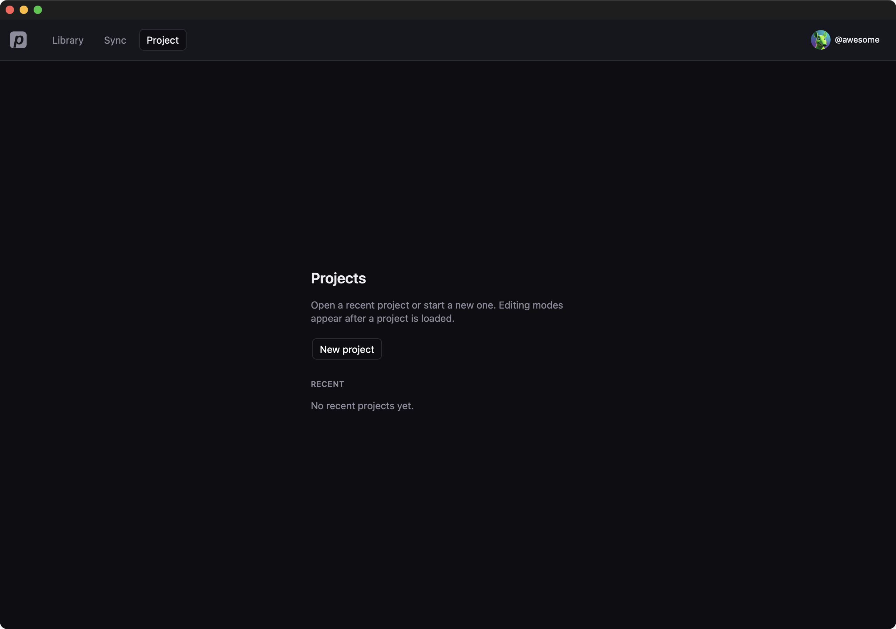
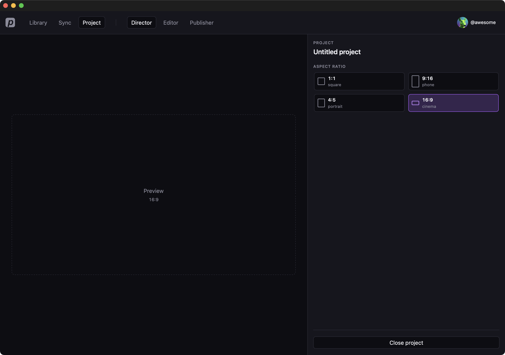

Projects
A project is the local document you edit. Creating one also binds a project folder in the Library. Director and Editor stay hidden until a project is loaded.
Create
- Click Project in the top bar.
- If a project is already open, click Close project on Director first.
- Click New project.
The new project is named Untitled project and opens in Director. A matching project folder appears on the Library board.

From Library you can also select stills or clips and click New project… in the sidebar. Those files move into the new project folder.
Open, close, rename
- On the Projects list, click a name under Recent. The app opens Director.
- Edit the Project field to rename. Press Enter or click away to save.
- Set Aspect ratio (1:1, 4:5, 9:16, 16:9). This is the project frame Editor and generate will use.
- Click Close project to return to the chooser.

Delete
On the chooser, click Delete next to a project. Confirm with Delete project.
Delete removes the project from this device. Library media is kept. If the project had a folder, that folder becomes a regular Library folder (same name and members) and is no longer marked as a project.
Annotations on Recent
A project may show Needs repair, Needs folder, Retry setup, or Legacy. Open it to repair or finish folder setup. Some older projects offer Open as legacy to skip creating a folder.